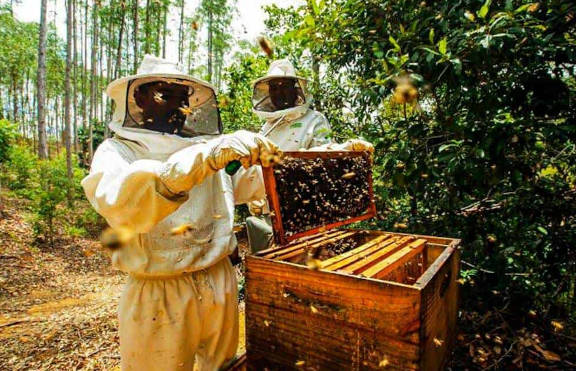

O que é Apicultura?
Apicultura é a área da zootecnia que é a criação de abelhas para a produção de uma grande quantidade de produto, as abelhas são animais de muita importância, por conta das suas características de polinização de plantas, sem eles não existiria plantas, por que a polinização que proporcionam uma grande quantidade de nutrientes para as plantas, assim a sua produção é muito incentivada para poder melhorar a polinização de uma determinada área, além dos seus produtos que são amplamente consumidos e muito valorizados.
O que o zootécnico faz nesta área?
- Proporciona estrutura para os animais
- Maneja os animais
- Realiza análises dos animais e os produtos
- Formula rações de boas qualidades para o animal
- Detectar problemas comportamentais nos animais
- Realiza a retirada dos produtos
Produção de abelhas
A produção de abelhas deve ser feita em ambiente controlado pois são animais sensíveis e bastante frájeis.
Estrutura
Para ser feita a produção de abelhas é necessário que seja feita uma estrutura semelhante como uma colmeia, para comportar uma grande quantidade de abelhas para produzirem os seus produtos, é feita uma caixa de madeira, e colocando telas de madeira para as abelhas se estabelecerem e formarem a estrutura de colmeia.
Nutrição
As abelhas são animais que podem se organizar entre si de maneira muito eficiente, mas o zootécnico pode influenciar isso incorporando um beneficiamento na alimentação, por meio de rações mais nutritivas, ou a utilização de geleia real.
Produtos
- Mel
- Própolis
- Geleia real
- Pólen
Maior propósito para a criação de abelhas, alimento doce que é altamente energético e rico em aminoácidos, é o que garante a alimentação das abelhas, é muito utilizado na alimentação humana presente em muitos pratos e muito utilizado em sobremesas
É uma substância pegajosa e é utilizada para higienizar a colmeia, porém é muito utilizada para a fabricação de diversos medicamentos, sprays, xaropes, entre outros
É o produto utilizado para a alimentação nos estágios iniciais das abelhas, e é o que a abelha rainha consome toda a sua vida, possui alta proteína, e é bastante valorizado na alimentação humana também
É o que preserva o alimento das abelhas, rico em proteínas, mas não é utilizado na alimentação de humanos